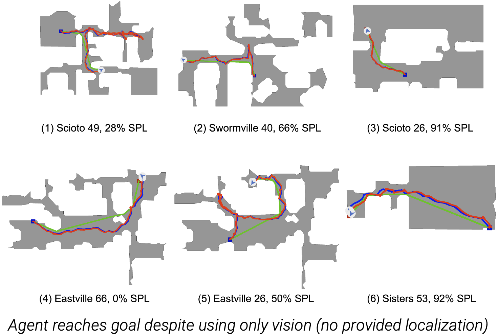

About Me CV Research GitHub Google Scholar Projects Photography
Ph.D. Student in Robotics at Georgia Tech
Atlanta, GA
Northeastern University
B.S. and M.S. Electrical Engineering
Concn. in Machine Learning & Computer Vision
About Me
I am currently a 4th year Robotics Ph.D. student at Georgia Tech advised by Dhruv Batra and Sehoon Ha. Previously, I graduated with my BS and MS from Northeastern University. My research interests involve scalable learning methods that will teach robots to effectively perceive and interact within various environments in the real world by training them within realistic simulators before transferring the learned skills to reality.
Currently, I am interning with the Machine Learning Research team at Apple under Alex Toshev and Harsh Agrawal. During my PhD, I've also interned at the Boston Dynamics AI Institute with Bernadette Bucher and Jiuguang Wang (Summer 2023), at Amazon with Gaurav Sukhatme on deep reinforcement learning for robotics with reward decomposition (Summer 2022), and at Meta AI with Akshara Rai on mobile manipulation for object rearrangement (Summer 2021).
Previously I also worked with Taskin Padir in the Robotics and Intelligent Vehicles Research (RIVeR) lab at Northeastern University. There, I led Team Northeastern in mutiple international robotics competitions such as the 2019 RoboCup@Home competition in Sydney, Australia, the 2018 World Robot Summit in Tokyo, Japan, and the Robocup@Home 2018 in Montreal, Canada, where we placed 4th internationally and 1st in the USA.
I have also had the pleasure of mentoring other students, such as Qian Luo (MS@GT), Simar Kareer (MS@GT), and Marco Delgado (BS@GT) in research projects.
One of my hobbies is taking photos. You can see some here.
Summer 2024

Summer 2023
Summer 2022
Summer 2021
2017 - 2019
Awards
- Herbert P. Haley Fellowship 2024
- Best Paper in Cognitive Robotics ICRA 2024 (1 of 3,937 submissions, 0.025%)
- Quad Fellowship Finalist, 2024
- Achievement Rewards for College Scientists (ARCS) Fellowship 2022, 2023
- Adobe Research Fellowship 2022 Finalist
- iGibson Dynamic Visual Navigation Challenge 2021 1st Place
- Robocup@Home 2019 1st Place in USA, 2018 1st Place in USA
- Northeastern Senior Capstone Design 2018, 1st Place
- Joseph Spear Scholarship 2017
- SASE Kellogg Scholarship 2016
- Clara & Joseph Ford Scholarship 2016
- HackMIT “Best NativeScript App for IoT” Winner 2016
- SASE InnoService Competition 3rd Place 2014-15, 3rd Place 2013-2014
- Karen T. Rigg Scholarship 2014
- Gordon CenSSIS Scholar 2013
- George Alden and Amelia Peabody Scholarship 2013-18
- Dean's Scholarship 2013-18
Research
Naoki Yokoyama*, Ram Ramrakhya*, Abhishek Das, Dhruv Batra, Sehoon Ha
IROS 2024
Trained transformer-based open-vocabulary ObjectNav policies using DAgger and released new dataset.
Naoki Yokoyama, Sehoon Ha, Dhruv Batra, Jiuguang Wang, Bernadette Bucher
Best Paper in Cognitive Robotics at ICRA 2024. 1 of 3,937 submissions (0.025%).
Workshop on Language and Robot Learning at CoRL 2023
State-of-the-art ObjectNav performance using vision-language foundation models.

Tsung-Yen Yang, Sergio Arnaud, Kavit Shah, Naoki Yokoyama, Alexander Clegg, Joanne Truong , Eric Undersander, Oleksandr Maksymets, Sehoon Ha, Mrinal Kalakrishnan, Roozbeh Mottaghi, Dhruv Batra, Akshara Rai
CVPR 2023 Demo Track
CVPR 2023 Meta AI Booth
Open-vocabulary mobile manipulation using LLMs to generate plans from natural language commands.
Naoki Yokoyama, Alexander Clegg, Joanne Truong, Eric Undersander, Tsung-Yen Yang, Sergio Arnaud, Sehoon Ha, Dhruv Batra, Akshara Rai
RA-L 2023
ICRA 2024
Near-perfect mobile pick-and-place in diverse unseen real-world environments without obstacle maps or precise object locations.

Karmesh Yadav*, Arjun Majumdar*, Ram Ramrakhya, Naoki Yokoyama, Aleksei Baevski, Zsolt Kira, Oleksandr Makysmets, Dhruv Batra
Naoki Yokoyama*, Simar Kareer*, Dhruv Batra, Sehoon Ha, Joanne Truong
ICRA 2023
Best Paper Award at Learning for Agile Robotics Workshop at CoRL 2022
Learned vision-based locomotion and navigation policies with Learning By Cheating to enable quadruped robots to navigate unfamiliar cluttered environments by stepping over obstacles.
Joanne Truong, Max Rudolph, Naoki Yokoyama, Sonia Chernova, Dhruv Batra, Akshara Rai
CoRL 2022

Naoki Yokoyama, Qian Luo, Dhruv Batra, Sehoon Ha
IROS 2022
Embodied AI Workshop at CVPR 2022
Achieved 1st place in the 2021 iGibson Visual Navigation Challenge using data augmentation methods coupled with deep reinforcement learning (PPO).

Ruslan Partsey, Erik Wijmans, Naoki Yokoyama, Oles Dobosevych, Dhruv Batra, Oleksandr Maksymets
CVPR 2022
Can an autonomous agent navigate in a new environment without ever building an explicit map?
Naoki Yokoyama, Sehoon Ha, Dhruv Batra
IROS 2021
Project Page Video Paper Code
Dynamics-aware training and evaluation for navigation. Demonstrated that trained agents better leveraged the dynamics of the robot to be faster than previous work, both within simulation and in the real world.
Finished 1st place among US teams.
Competition with mobile manipulation and perception tasks, held in Odaiba's Tokyo Big Sight.
Object Segmentation Person Description
Finished 4th internationally, 1st among USA. Completed various mobile manipulation and human-robot interaction tasks using deep learning and computer vision.